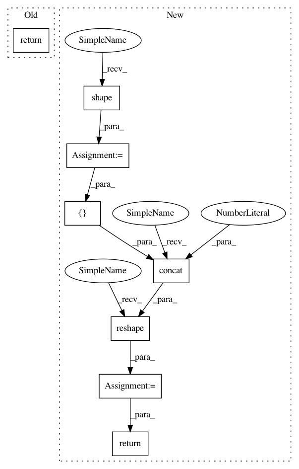

2faf7acd48088783ab4d8507cc3eb1e74430b3ad,sonnet/src/reshape.py,Reshape,__call__,#Reshape#Any#,170
Before Change
dimension and doesn"t actually need reshaping).
self._initialize(inputs)
return _batch_reshape(inputs,
output_shape=self._output_shape,
preserve_dims=self._preserve_dims)
@base.no_name_scope
def reversed(self, name=None):
Returns inverse batch reshape.
After Change
inputs,
tuple(preserved_shape) + output_shape)
else:
dynamic_preserved_shape = tf.shape(inputs)[:self._preserve_dims]
output = tf.reshape(
inputs,
tf.concat([dynamic_preserved_shape, output_shape], axis=0))
return output
@base.no_name_scope
def reversed(self, name=None):
Returns inverse batch reshape.
In pattern: SUPERPATTERN
Frequency: 3
Non-data size: 8
Instances
Project Name: deepmind/sonnet
Commit Name: 2faf7acd48088783ab4d8507cc3eb1e74430b3ad
Time: 2019-08-14
Author: slebedev@google.com
File Name: sonnet/src/reshape.py
Class Name: Reshape
Method Name: __call__
Project Name: deepmind/sonnet
Commit Name: e164c3574da160fb72fc962947a783fa299424e3
Time: 2019-07-07
Author: tomhennigan@google.com
File Name: sonnet/src/batch_apply.py
Class Name:
Method Name: merge_leading_dims
Project Name: GPflow/GPflow
Commit Name: f01a7761d70d727ef4ea42c05464c2f85679ecd1
Time: 2018-12-27
Author: art.art.v@gmail.com
File Name: gpflow/kernels/base.py
Class Name: Kernel
Method Name: slice_cov